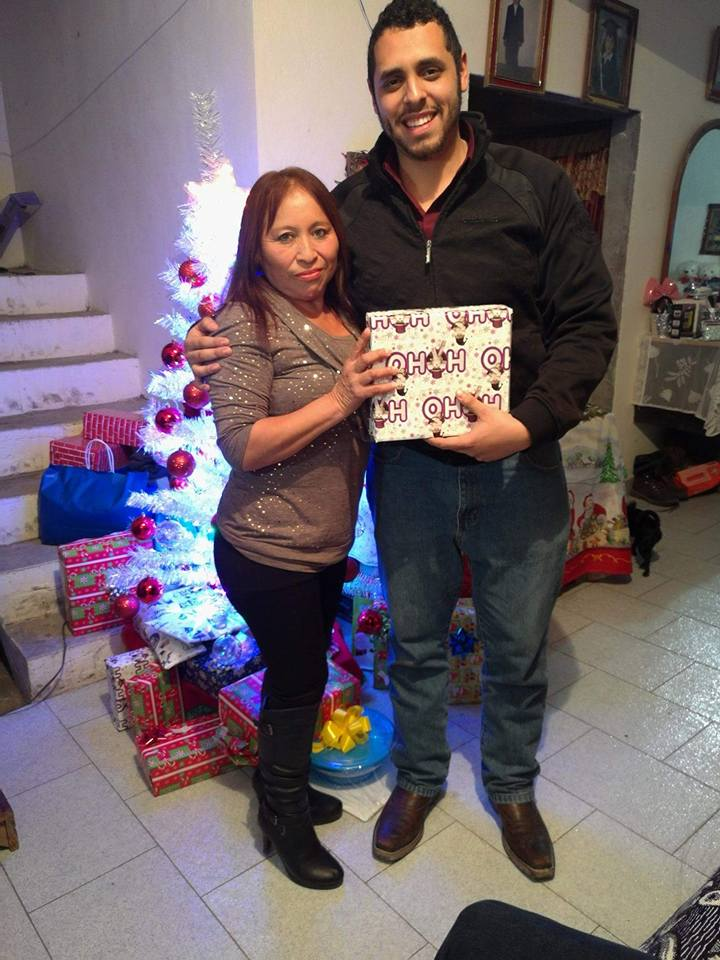
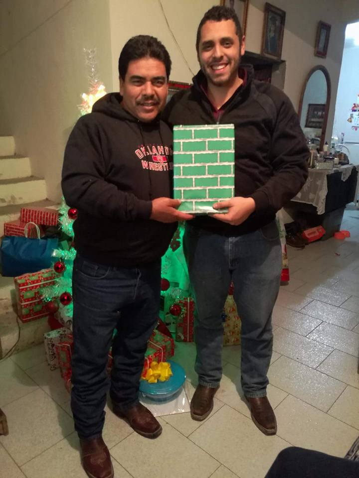

Hola osidades, espero estes suave y bella como siempre, hice esta pequeña (como tú) pagina web
para recordarte lo filices que somos juntitos y lo mucho que te gusta estar conmigo.
1 / 7
Desde que nos conocemos hemos ido a la iglesia (no muy seguido) pero lo hacemos y eso es muy bueno
porque diosito nos cuida siempre, eso nos hace vivir filices y tranquilos.
2 / 7
Siempre me has apoyado en todas las ideas que tengo aunque no siempre te considere
para llevarla acabo, pero nunca me dejas solito.
3 / 7
Soy muy bello y tierno.
4 / 7
Te ayudo a cuidar a la pelonidad que es tremenda y suave, aunque sea un ratito pero lo hago.
5 / 7

Aunque frente a tus amigos quieras decir que no yo se que si te gusta la reñoña, y te cae bien
mi amigo Franco porque se nota en esta foto.
6 / 7

A tu mami le caigo bien pero a veces se le olvida y me trata mal, pero aun asi
me cae bien y es divertida cuando estornuda.
7 / 7

Soy el favorito de tu papi forever.
Fin.❤